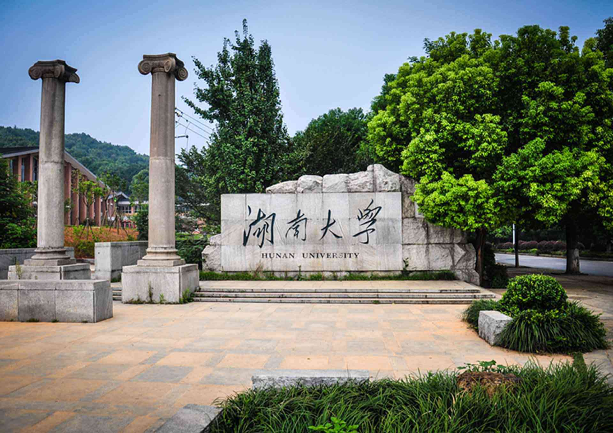

项目介绍
项目名称：湖南大学
负责部门：湖南省长沙市洋湖湿地
项目位置：湖南省长沙市
项目咨询：000-0000-0000
项目背景
项目功能介绍
随着校园网络和多媒体教室的快速普及，多媒体网络教学系统正日益成为现代化校园的基础设施，
它将综合集成传输包括教室、办公室、会议室等的语音、图像信号，对电脑设备、影音设备、环境设备进行集中及远程控制。
电教是现代教育以计算机、投影仪、幻灯、录音、录像、广播、电影、电视等现代教育技术教育，实现教学现代化的理论与实践。
与传统电教室相比，未来推出的智能电教室能够实现灯光、窗帘、多媒体设备的智能联动，
上课前自动打开电教设备，下课后自动关闭所有用电设备，减少用电安全隐患，并根据教室环境自动开关灯光、窗帘、窗户，
提供优质上课环境。
每个院校都有多媒体教室，这是学校普遍应用智能化的区域。但是，该智能化程度比较低，
都是采用有线技术，使用麻烦。通过改造多媒体教室，全系列无线产品，对影音设备没有型号限制，
都可无缝接入系统。可以实现功能：
•一键上课、下课
•空气质量自动调节
•智能用电，绿色节能
•智能电器控制
•远程操控
•管理员集中管控，分权限管理，多账号登录，账号操作权限管理